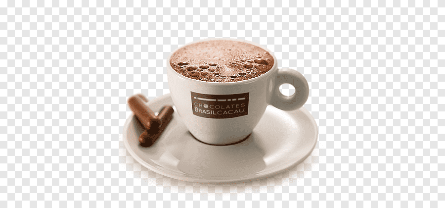
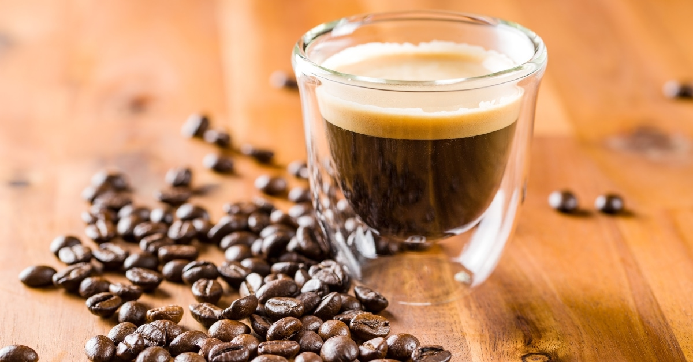

Espresso
Espresso is a strong, concentrated coffee brewed by forcing hot water through finely-ground coffee beans under high pressure. It's known for its rich flavor and velvety crema.
Cappuccino
Cappuccino is a popular coffee drink made with equal parts espresso, steamed milk, and milk foam. It's a perfect balance of creamy texture and robust coffee flavor.
Latte
Latte is a creamy coffee drink made with espresso and steamed milk. It is typically topped with a light layer of milk foam, and can be flavored with syrups for added taste.

Americano
Americano is made by diluting espresso with hot water, resulting in a smooth coffee with a similar strength to drip coffee, but with a distinct espresso flavor.

Robusta
Robusta coffee beans are known for their strong, bitter flavor. It's commonly used in espresso blends and instant coffee due to its high caffeine content and hardy nature.
